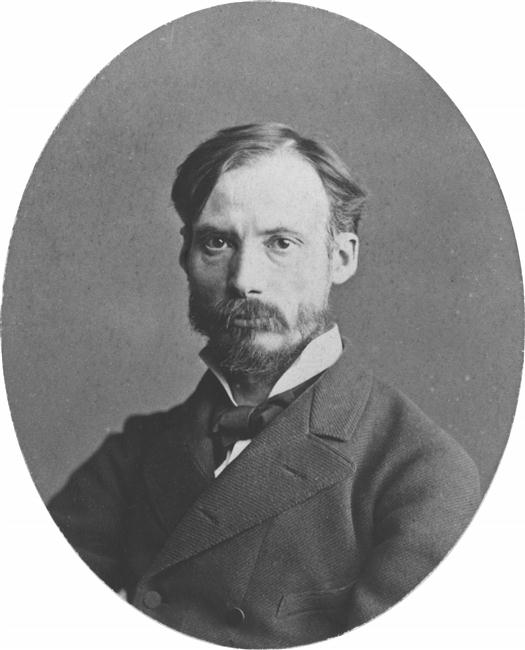

Claude Monet
Claude Monet, a central figure in the Impressionist movement, was born in Paris in 1840. He is renowned for his exceptional ability to capture the essence of light and atmosphere in his paintings. Monet's early works depicted scenes of everyday life, but he later focused on landscapes and outdoor settings, often painting the same subject multiple times to capture the changing light and weather conditions. His most famous series include the water lilies in his garden at Giverny, the haystacks, and the Rouen Cathedral. Monet's innovative use of color, brushwork, and composition revolutionized the art world and laid the foundation for modern art. He continued to paint until his death in 1926, leaving behind a legacy of beauty and inspiration that continues to captivate audiences worldwide.
Pierre-Auguste Renoir
Pierre-Auguste Renoir, another prominent figure in the Impressionist movement, was born in Limoges, France, in 1841. Known for his mastery of depicting light, color, and the human form, Renoir's works often portrayed scenes of leisure, particularly in outdoor settings. His paintings exude warmth, joy, and a sense of vitality, capturing moments of everyday life with a soft, luminous touch. Renoir's style evolved over his career, from the more formal compositions of his early years to the loose, spontaneous brushwork of his later Impressionist period. He was particularly skilled in portraying the beauty of women, often featuring them in his works as muses or subjects of admiration. Despite facing criticism and financial struggles during his lifetime, Renoir persevered and eventually gained widespread acclaim for his contributions to the art world. Today, his paintings are celebrated for their timeless charm and enduring appeal.
Edgar Degas
Edgar Degas, born in Paris in 1834, was a key figure in the Impressionist movement, although he preferred to be called a realist or independent. Renowned for his depictions of dancers, Degas captured the grace, movement, and emotion of the ballet world with unparalleled skill. His works often showcased behind-the-scenes glimpses of rehearsals and backstage moments, offering a unique perspective on the dance culture of his time. Degas was a master of composition and often experimented with unconventional viewpoints and cropping techniques. Beyond his fascination with dance, he also explored other subjects such as horse racing, women in domestic settings, and the everyday life of Parisians. Despite experiencing vision problems later in life, Degas continued to create art until his death in 1917, leaving behind a legacy of innovation and influence in the art world.